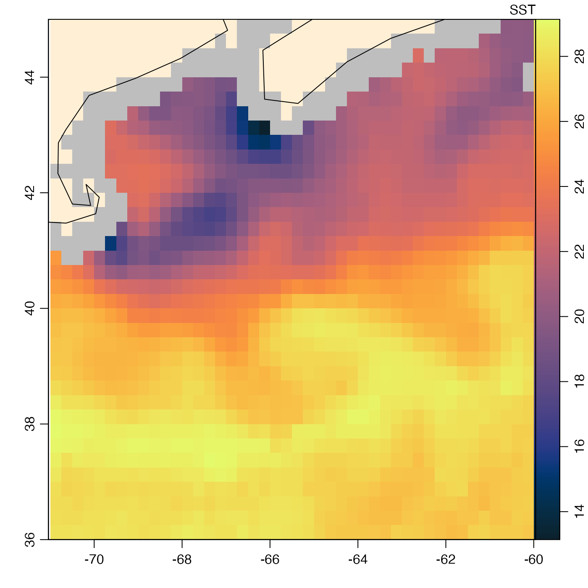
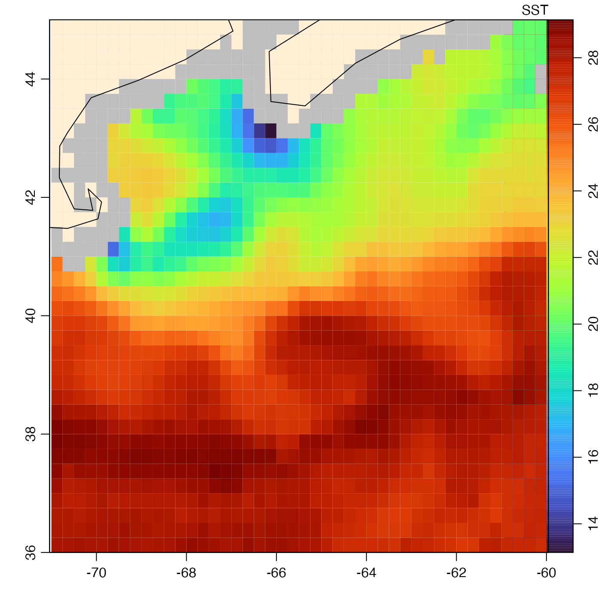

Plot an image of a component of an amsr object.
# S4 method for amsr plot( x, y, asp = NULL, breaks, col, colormap, missingColor = list(land = "papayaWhip", none = "lightGray", bad = "gray", rain = "plum", ice = "mediumVioletRed"), debug = getOption("oceDebug"), ... )
| x | an amsr object. |
|---|---|
| y | character value indicating the name of the band to plot; if not provided,
|
| asp | optional numerical value giving the aspect ratio for plot. The
default value, |
| breaks | optional numeric vector of the z values for breaks in the color scheme.
If |
| col | optional argument, either a vector of colors corresponding to the breaks, of length
1 less than the number of breaks, or a function specifying colors.
If neither |
| colormap | a specification of the colormap to use, as created
with |
| missingColor | List of colors for problem cases. The names of the
elements in this list must be as in the default, but the colors may
be changed to any desired values. These default values work reasonably
well for SST images, which are the default image, and which employ a
blue-white-red blend of colors, no mixture of which matches the
default values in |
| debug | A debugging flag, integer. |
| ... | extra arguments passed to |
In addition to fields named directly in the object, such as SSTDay and
SSTNight, it is also possible to plot computed fields, such as SST,
which combines the day and night fields.
Other things related to amsr data:
[[,amsr-method,
[[<-,amsr-method,
amsr-class,
amsr,
composite,amsr-method,
download.amsr(),
read.amsr(),
subset,amsr-method,
summary,amsr-method
Other functions that plot oce data:
download.amsr(),
plot,adp-method,
plot,adv-method,
plot,argo-method,
plot,bremen-method,
plot,cm-method,
plot,coastline-method,
plot,ctd-method,
plot,gps-method,
plot,ladp-method,
plot,landsat-method,
plot,lisst-method,
plot,lobo-method,
plot,met-method,
plot,odf-method,
plot,rsk-method,
plot,satellite-method,
plot,sealevel-method,
plot,section-method,
plot,tidem-method,
plot,topo-method,
plot,windrose-method,
plot,xbt-method,
plotProfile(),
plotScan(),
plotTS(),
tidem-class
Dan Kelley
library(oce) data(coastlineWorld) data(amsr) # see ?amsr for how to read and composite such objects # Example 1: plot with default colour scheme, oceColorsTemperature() plot(amsr, "SST")